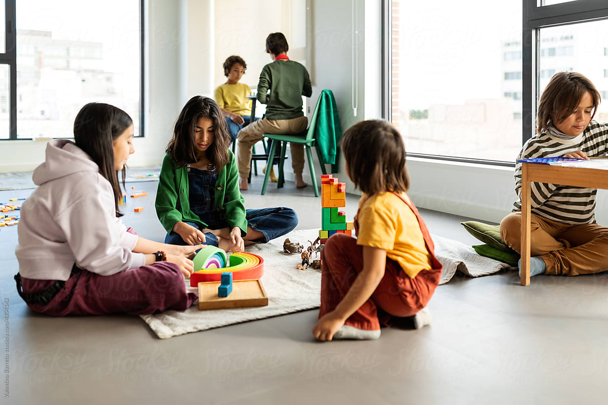
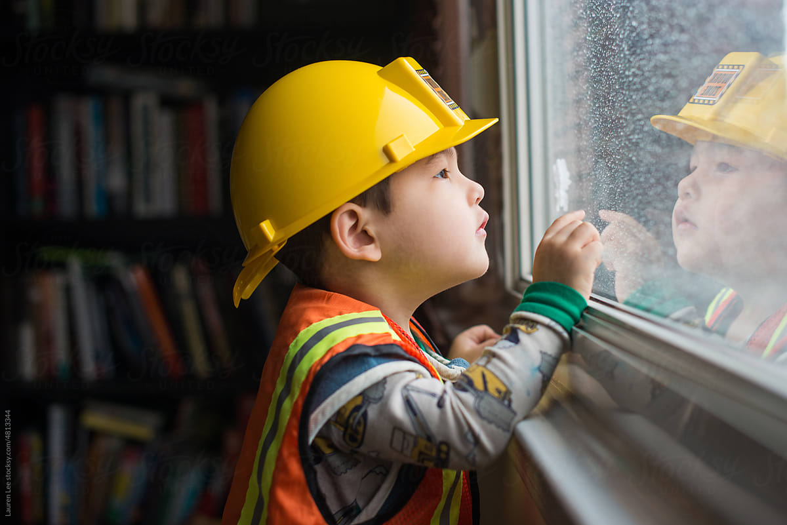

BỆNH TỰ KỶ Ở TRẺ
Tự kỷ là các rối loạn phát triển thần kinh đặc trưng bởi sự tương tác và giao tiếp xã hội
kém, các hành vi lặp đi lặp lại và rập khuôn, và sự phát triển trí tuệ không đều đôi khi có
khuyết tật về trí tuệ. Triệu chứng bắt đầu từ giai đoạn sớm của thời thơ ấu.
đọc thêm
TÁC ĐỘNG CỦA GIA ĐÌNH
Gia đình là một nhân tố rất quan trọng trong môi trường gần nhất của trẻ, mọi thành viên
trong gia đình đều tiếp xúc với trẻ hàng ngày, kích thích sự phát triển về mọi mặt của trẻ
đặc biệt là ngôn ngữ và kỹ năng nhận biết
đọc thêm

CÁC HOẠT ĐỘNG HỖ TRỢ GIAO TIẾP CHO TRẺ TỰ KỶ
Giao tiếp là một quá trình được xây dựng dựa trên các kỹ năng nối tiếp nhau. Nền móng của
ngôi nhà giao tiếp là kỹ năng năng tập trung chú ý. Đây là kỹ năng quan trọng nhất. Sau đó,
các kỹ năng hiểu quan hệ nhân quả, giao tiếp mắt, bắt chước, lắng nghe lần lượt là những
viên gạch xây dựng cho trẻ một sự hiểu biết
đọc thêm
Liên hệ với các chuyên gia hàng đầu
 (1).jpg)
Tiến sĩ Tâm lý học
Phạm Văn Tư
Phó Trưởng Khoa Công tác xã hội, Trường Đại học Sư phạm Hà Nội Hơn 20 năm là chuyên gia đánh giá và trị liệu tâm lý cho phụ nữ, trẻ em, thanh thiếu niên liên quan đến trầm cảm, lo âu,…
.jpg)
Tiến sĩ Tâm lý học
Nguyễn Thị Mai Hương
Hơn 15 năm đánh gía, tham vấn trẻ em có sang chấn tâm lý, rối loạn phát triển,…
 (1).png)
Tiến sĩ Tâm lý - Giáo dục
Nguyễn Thắm
Hơn 20 năm kinh nghiệm làm việc chuyên sâu trong lĩnh vực trị liệu tâm lý, tham vấn tâm lý và giáo cho trẻ em và vị thành niên